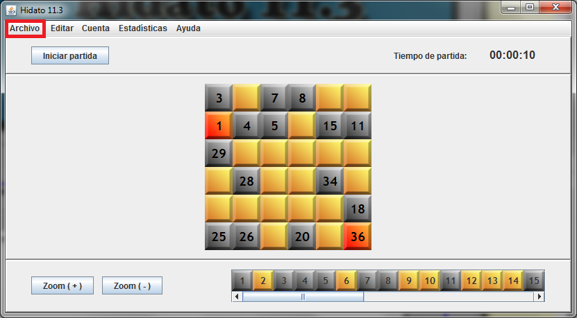
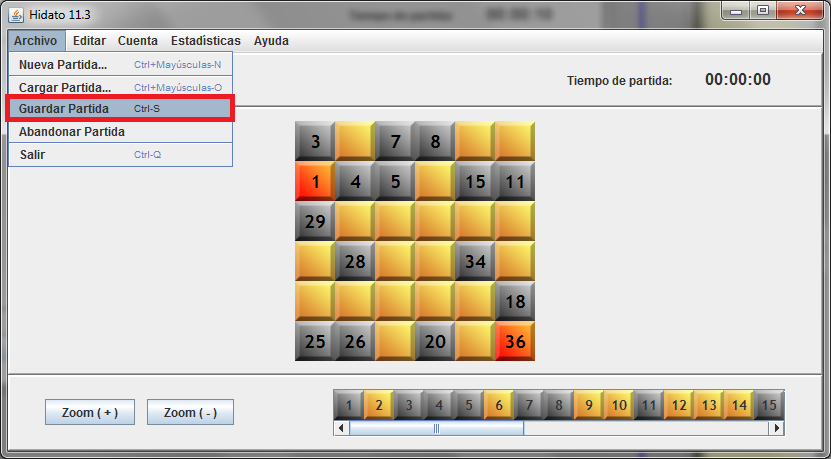
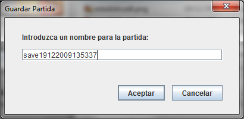

Con una partida cargada, seleccione 'Archivo':

Seleccione 'Guardar Partida':

Si no es la primera vez que se guarda la partida, ésta se guardará automáticamente con el nombre en que ya se había guardado. Si es la primera vez, aparecerá el siguiente diálogo en el que se podrá introducir el nombre deseado para la partida guardada:

Si el nombre de la partida es válido y no existe, la partida se guardará. En caso contrario, aparecerá un mensaje indicando el error.